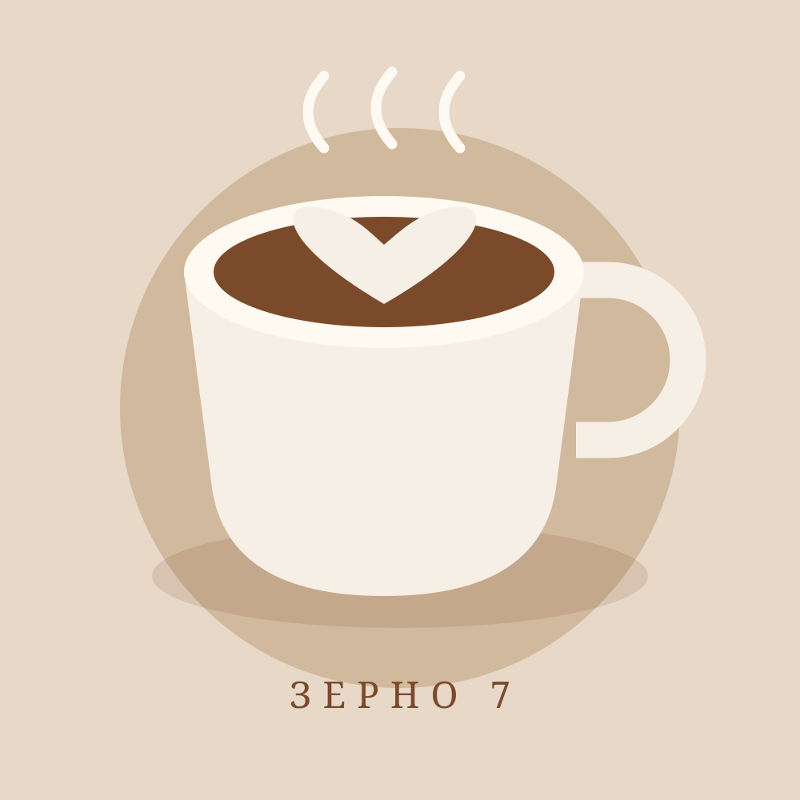

01 / ШКОЛА БАРИСТА
Бариста с нуля
5 занятий по 3 часа
14 900 ₽
Программа и потоки ↗КОФЕЙНЯ · ОБЖАРКА · ШКОЛА БАРИСТА
Бариста за 5 занятий. Разберитесь в кофе и начните практиковаться за профессиональной кофемашиной.

ОБУЧЕНИЕ
5 занятий по 3 часа
14 900 ₽
Программа и потоки ↗3 занятия
8 900 ₽
Программа и потоки ↗2 занятия
5 900 ₽
Программа и потоки ↗Команда до 12 человек
24 000 ₽
Программа и потоки ↗4 ВОПРОСА
На занятиях важна практика: отдельный класс, три профессиональные кофемашины и группа до шести участников.
Преподаватель помогает разобраться в оборудовании и отработать приготовление напитков. Уточнить, кто ведёт выбранный поток, можно при записи.
Иллюстрации учебного проекта. Фотографии реального класса не предоставлены.
Выберите программу и месяц старта. Мы свяжемся с вами, чтобы уточнить поток.
Записаться на курс ↗